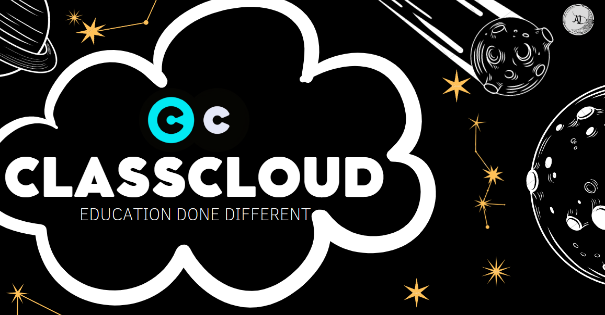

Projects
ClassCloud

ClassCloud is an innovative educational website designed to facilitate
collaborative learning for younger children and parents. Through interactive features,
including educational video resources and short quizzes, ClassCloud empowers children to gain a
deeper understanding of a wide range of topics, while simultaneously providing parents with valuable
insights into how much time their children spend actively studying.
With ClassCloud, learning is not just a solitary activity, but rather an immersive and enjoyable
experience that can be shared by parents and children alike.
This was developed using JavaScript, PHP, CSS, and HTML and runs on a
MySQL database utilizing USBWEBSERVER for enhanced portability.Additionally, I utilized the powerful
testing capabilities of Python and Selenium for faster and more efficient testing.
In order to provide full transparency and promote
best practices, I have created a
comprehensive technical documentation totaling 165 pages. This
documentation includes critical components such as requirement analysis (SRS), UML diagrams,
Software Design Specification (SDD), and a testing document, among others.
As a testament to its quality and innovation, the project received an impressive 90% grade upon
completion. For those interested in exploring the project in greater detail, the code is available
for
review here

This website features a sleek and intuitive landing page, complete with user-friendly login and
signup interfaces for both parents and students. Upon authentication, students are seamlessly
redirected to the educational portal, while parents are directed to the parent portal and admins to
the admin page.
To ensure that the website is tailored to meet the unique needs of its users, students are
redirected to different pages based on their age, with a particular focus on simple topics that are
easily digestible for a younger demographic. This approach reflects our unwavering commitment to
providing a high-quality and accessible educational experience for all users.
Our educational platform offers a comprehensive programming course for seventh-grade
students. This page utilizes the user-friendly and convenient PyScript's
API, which allows real-time Python
interpreter, allowing students to seamlessly follow educational programming content. With PyScript,
students can engagingly practice their programming skills, offering a
unique educational experience.
In addition to our programming course, our website features an innovative and intuitive sidebar with
a built-in YouTube search. This feature was inspired by the realization that users frequently turn
to YouTube to gain a deeper understanding of various topics. With our built-in YouTube search, users
can efficiently and conveniently search for videos to fix or understand errors, streamlining the
learning process and promoting a more effective and immersive educational experience.
The parent portal offers a user-friendly interface that provides valuable insights into the
performance and learning habits of their child. telling us information on our child-like
what their best and worst grades are,
and more importantly how much time have they actually been studying on the website.
This feature is
made possible through the implementation of an asynchronous JavaScript timer, which is highly
intelligent and can detect when a child is actively engaged in a learning session. The timer checks
whether the student has their mouse on the tab and is actively participating in a course, and then
promptly sends this data back to the database for real-time analysis. This allows parents to take a
quick and comprehensive look at their child's study habits, providing them with an effective
tool for tracking their child's study time and making informed educational decisions.
Undefeatable Tic-Tac-Toe

This project is the well-known Tic-Tac-Toe pen and paper-game with an AI utilizing the min-max
algorithm to make it impossible to defeat
meaning you can either end in a tie or the AI will win, the reason for this is that the minmax
implementation works by exploring all possible moves and counter-moves, building a game tree of all
possible future states of the game. At each level of the tree, it alternates between maximizing the
player's score and minimizing the opponent's score.
The algorithm then chooses the move that leads to the best possible outcome for the player.
By leveraging the p5.js library, this website is able to render the game board in a visually
pleasing manner and enable user interaction through the drawing of X's and O's, providing a highly
effective solution for this type of project.
For more information about how this works, you can check out my documentation here or the code here
The home page of the website boasts a visually unique design. It features a dynamic
background GIF that seamlessly moves behind the large, transparent text, creating an eye-catching
and
captivating aesthetic.
Angular Project
During my internship, I had the opportunity to work on an exciting Angular project that provided me
with an in-depth understanding of Angular and Angular Material. The project involved the development
of custom components and API integration to retrieve survey data, which was then displayed based on
its categorization as either closed, published, or expired.
To enhance the user experience, I leveraged Angular Material to create visually appealing and highly
functional tabs that provided users with the ability to view all surveys at a glance. Overall, this
project was an excellent opportunity for me to further develop my Angular skills and enhance my
knowledge of web development best practices.
Active Contributor
Grepper is an online community-driven platform that provides developers with a vast collection of
code snippets and solutions to coding problems. As a passionate developer and a member of the
Grepper community, I am thrilled to be part of this platform that is dedicated to helping developers
of all skill levels to overcome coding obstacles.
Through my contributions on Grepper, I have had the opportunity to help over 3000 developers by
providing them with reliable and efficient solutions to their coding problems. It has been
incredibly fulfilling to see the impact of my contributions and the appreciation from the community.
I have also been able to enhance my problem-solving skills and deepen my understanding of coding
best practices by reviewing and improving the code of other developers.
About
My educational background comprises of a Bachelor's degree in Software Engineering earned from the
esteemed Princess Sumaya University for Technology. I have acquired hands-on experience in HTML5,
CSS, and JavaScript, and further boosted my skill set with a certification in Scrum methodologies. I
am a self-motivated individual who is always eager to learn and grow, and I have taken advantage of
online learning opportunities by taking multiple courses on Udemy. My quest for knowledge has led
me to complete an internship as a web developer, where I had the opportunity to work with Angular
and gain practical experience in the field. My education is a representation of my dedication to
technology and my commitment to continuous learning.
I enjoy applying my skills to the real world as I have taken advantage of Python and Selenium
to build automation projects that improve my efficiency.
My expertise extends beyond just front-end development and I have utilized PHP for
back-end development in my HTML, and CSS projects, showcasing my full-stack capabilities. My
projects
and attention to detail
are a testament to my problem-solving skills and ability to find creative solutions to enhance my
work. Overall, my education, experience, and projects demonstrate my passion for
technology and my drive to continuously improve and expand my skill set.